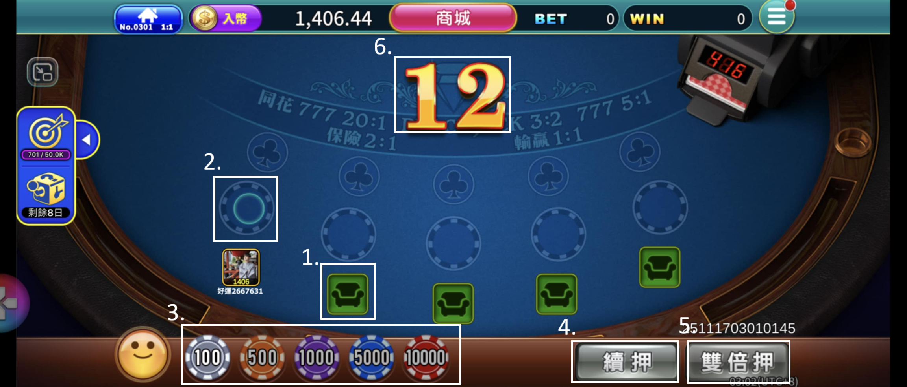
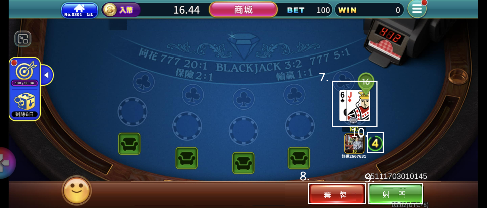

4. 介面（UI/UX）與操作流程
4.1 主要UI元素
 UI 元素列表
- 座位按鈕 (圖片位置 1.)
- 下注區 (圖片位置 2.)
- 籌碼按鈕 (圖片位置 3.)
- 續押按鈕 (圖片位置 4.)
- 雙倍壓按鈕 (圖片位置 5.)
- 下注倒數 (圖片位置 6.)
- 兩張牌展示區 (圖片位置 7.)
- 棄牌按鈕 (圖片位置 8.)
- 射門按鈕 (圖片位置 9.)
- 操作倒數 (圖片位置 10.)
- 第三張牌展示區
- 牌局結果提示（射入／撞柱／失敗）
4.2 下注前的按鈕及其邏輯
- 座位按鈕： 點擊可入座，並帶入用戶頭像 。該局已進行入座按鈕顏色變深無法再點擊 。已有人入座位置無法點擊入座 。非下注時間無法點擊入座 。
- 下注區： 點擊自己入座下注區時，依照籌碼區當前選定籌碼進行下注 。下注後下注區依照下住額出現籌碼，且下方顯示目前下注金額 。若下注後下注額將大於自身剩餘籌碼量，無法進行下注並跳出金額不足提示 。未入該座點擊下注區，無法進行下注 。
- 籌碼按鈕： 點擊切換進行下注籌碼額度 。當前選取到的籌碼顏色略亮 。點擊其他籌碼後，該籌碼轉亮，原先籌碼轉暗 。預設選取為最左邊(最少籌碼) 。
- 續押按鈕： 點擊可依照上一回合下注量自動進行下注 。上一局未下注狀況下按鈕置灰無法點擊 。若續押後下注額將大於自身剩餘籌碼量，無法進行下注並跳出金額不足提示 。非下注時間無法點擊入座 。
- 雙倍押按鈕： 點擊可依照當前已下注量，進行再次下注 。尚未下注狀況下按鈕置灰無法點擊 。若下注後下注額將大於自身剩餘籌碼量，無法進行下注並跳出金額不足提示 。
- 下注倒數： 下注倒數，倒數結束後進入操作階段 。無人下注則跳出 toast 提示並進入下一局 。倒數五秒內字體轉紅展現加急 。
4.3 下注後的按鈕邏輯 8]
- 兩張牌展示區： 有人下注位置進行發牌並展示獲得兩張牌區域 。無人下注位置為空，不進行發牌 。
- 棄牌按鈕： 點擊後進行棄牌，不發第三張牌且結算不進行賠付 。未下注玩家不出現該按鈕 。
- 射門按鈕： 未下注玩家不出現該按鈕 。間距為 0 或 1 時無法點擊 。
- 操作倒數： 操作倒數，倒數結束未操作則自動進行棄牌 。
- 第三張展示區： 點擊射門用戶展示第三張牌 7]。未進行射門位置不展示第三張牌 。
- 牌局結果提示（射入／撞柱／失敗）： 於第三張牌展示區展示牌局結果 。